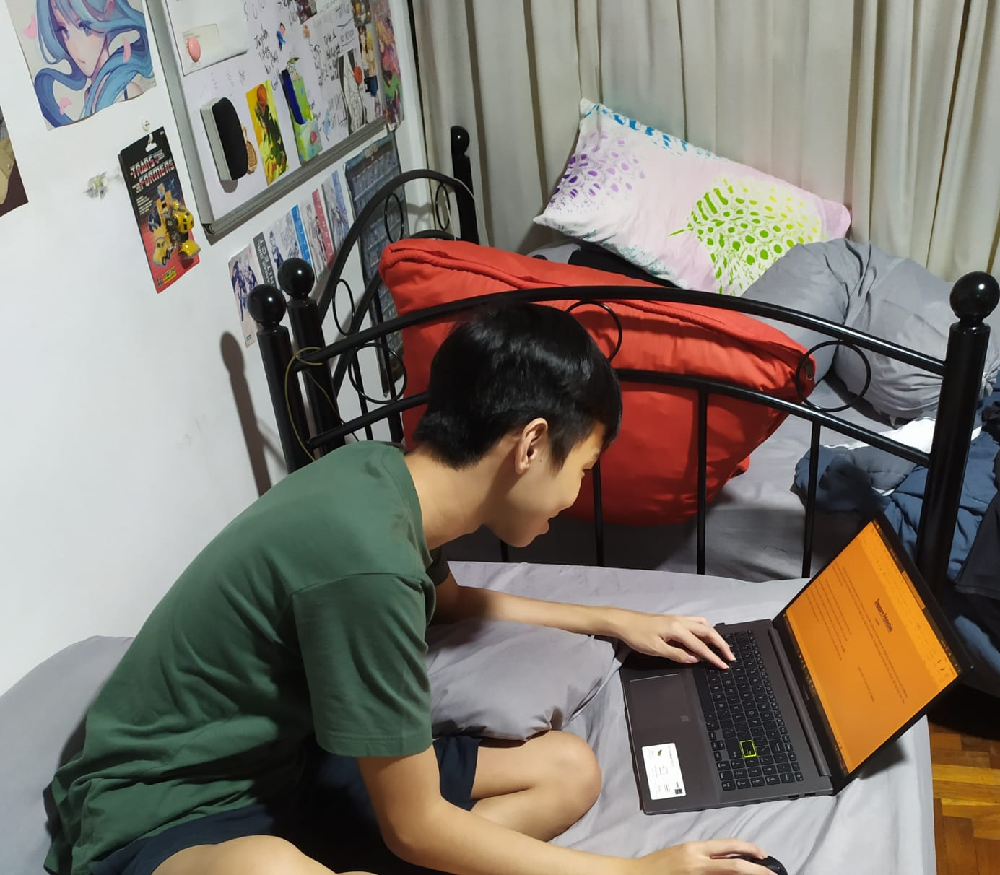

Enrolling into SP was an exciting experience. Returning to school after a almost 6 month break was refreshing, especially since poly is such a different environment from secondary and primary school. It took a few days to get used to the travelling, the laptop usage, the lessons, the campus, and the food, but I feel relatively at home here now.
The flipped classroom format has been interesting to say the least, the huge emphasis on self-directed learning had me stumped at first, as I thought it was strange that I am expected to learn things on my own at home when I enrolled in the school so I could learn everything at said school, but I now have adjusted and can see the benefits of this approach now.
Another perk of poly life is being able to eat at pretty sophisticated food courts. Here is my review of the food courts in SP (have not tried FC2 or 3)
FC1: "I've only been here once as it is on the other side of the campus, it is quite inconvenient to get to, however, it seems very promising in terms of food. It was absolutely out of this world that $5 at the curry rice store could get me such a huge portion of food. It was far too big of a portion, it left me and my friends in a food coma in fact. Would recommend but be sure to share one plate with someone else. I am looking forward to coming again to try the other stalls."
FC5: "It is simply Subway, KFC and some smaller stalls put together. Pretty cool food court though, because you would never see something like this outside of polytechnic. Food was as expected. FC5 is actually located at a reasonable distance away from SoC so it is fairly convenient."
FC4: "This has been THE go-to food court. As it is a Kofu food court, I can come here knowing that I will have a good experience everytime. There are many good stalls but the most amazing one must be the chicken rice stall. The Chicken Rice only costs $2.50 so it is high value for money, and it tastes good too. Other stalls like the Taiwan cuisine have very good meat too. FC4 is located just at the business school so it is near SoC. Definitely the top food court overall."
FC6: "FC6 is a strange food court. When I first visited it, it reminded me of a school canteen. Everything from the design of the stalls, the benches and tables were giving me school canteen vibes. The thing is that I would not have minded this if it had good food for a very good price like in school canteens. However, the food prices seem quite high. However, props to the waffle store as the waffles are really good. FC6 gets bonus points for the convenience of being just below SoC too."
The dreamjob for me would be video game development seeing how passionate I am about games. but seeing that there are limited opportunities for that in Singapore, that dream may not be very practical for me in the near future. With my IT knowledge and specialization in AI coming out of poly.
I hope to be able to eventually achieve this sometime in my life, but I am also content with working in the IT space until then. There should be plenty of opportunities awaiting me, including machine learning among other IT related things. However, I have not put too much thought into my career yet, so I shall wait and see as poly life goes on.